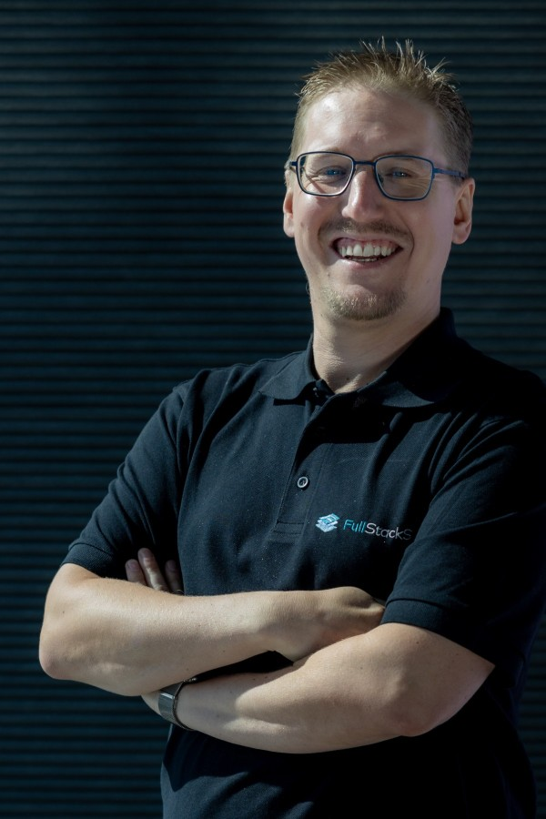

01
Rancher & OpenShift
Rancher and OpenShift foundations, internal platform patterns, and security controls that stay operable as the landscape grows.
Michael Klug · Senior Platform Architect · Kubestronaut
I design cloud-native platforms that make the secure path the easy path — so developers can ship with confidence instead of wrestling with infrastructure.

Where I add leverage
Strong platforms are more than clusters and pipelines. They connect architecture, operations, and the daily developer experience into one dependable system.
Rancher and OpenShift foundations, internal platform patterns, and security controls that stay operable as the landscape grows.
GitOps, infrastructure as code, and CI/CD workflows that make change traceable, environments repeatable, and feedback fast.
Security built into the platform path: Kubernetes hardening, workload controls, cloud security, and practical guardrails teams can actually adopt.
OpenTelemetry-first telemetry pipelines and Istio service-mesh expertise that turn runtime complexity into signals teams can understand and act on.
How I work
I work backwards from the moments that slow teams down, then shape the architecture, automation, and operating model around a simpler path forward.
Bring me a hard platform problemFollow the real path from an idea to production and find where confidence drops.
Turn the right decisions into secure defaults, reusable patterns, and clear ownership.
Pair documentation and automation with the context teams need to move independently.
Experience
Building infrastructure and cloud-native systems since 2014 — from operating systems and monitoring to secure developer platforms.
FH Joanneum, 2020 · Graduated with distinction (grade 1.32). Thesis work on managed CI/CD platforms and Kubernetes operators for complex microservices.
FullStackS
Helping developers get things done quickly, conveniently, and securely through pragmatic platform engineering.
FullStackS
Cloud-native consulting for on-premise and cloud environments, plus internal R&D.
IBM
Led an OpenShift-based project and enabled teams around GitOps, cloud-native development, and complex platform installations.
Beyond by BearingPoint
KNAPP AG
Speaking, teaching & community
I turn hands-on platform work into courses, talks, and community conversations that help other engineers move faster with fewer hidden assumptions.
Co-planning and teaching the annual “Containerization and Kubernetes” course for the next generation of software engineers.
12.5 hours · annual hands-on courseBuilding a regional CNCF community for practitioners, students, maintainers, and companies across southern Austria.
Visit the communityTwo talks at the Austrian Platform Engineering Community Day, followed by a hands-on inner-loop session at Lakeside Talks.
See speaking activitySelected talks
From workflow engines to developer inner loops: practical patterns, trade-offs, and live demos rather than architecture by slide deck alone.
Certified across Kubernetes administration, application delivery, security, GitOps, service mesh, observability, and cloud security.
View Kubestronaut credential ↗Let’s make work flow
Whether it is architecture, delivery friction, or developer adoption, I’m always up for a useful technical conversation.
michiklug85@gmail.com